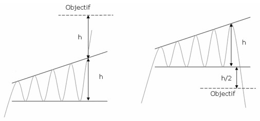
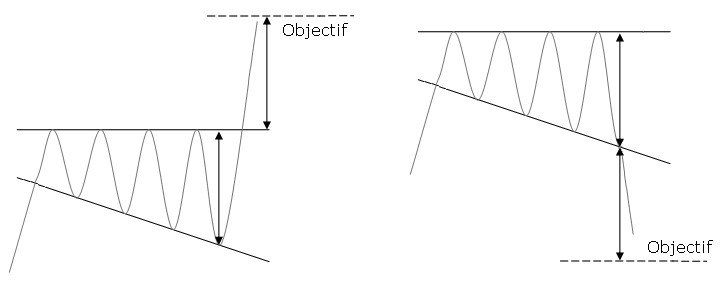

- Figures chartistes : L'Elargissement avec horizontale -
L’élargissement à angle droit traduit de la nervosité croissante des investisseurs mais également de leur indécision. Si la figure n’est pas repérée rapidement, les mouvements peuvent paraître totalement aléatoires et ainsi piéger de nombreux investisseurs.
L’objectif de cours est donné en reportant la hauteur maximale du triangle sur le point de cassure.
Validité :
Chaque droite doit être touchée au moins deux fois pour être validées.
La formation de cette figure doit être précédée d’un mouvement haussier.
Elargissement ascendant

Elargissement descendant

70% sortie baissière.
91% l’objectif minimal de la figure est atteint en prenant la technique de la hauteur maximale du triangle. En cas de sortie baissière, le pourcentage tombe à 43%.
44% il y a pullback dans le cas d'une sortie haussière et 72% dans le cas d'une sortie baissière.
6% La sortie se fait horizontalement.
57% sortie haussière.
90% l’objectif minimal de la figure est atteint en prenant la technique de la hauteur maximale du triangle. En cas de sortie baissière, le pourcentage tombe à 70%.
23% il y a pullback dans le cas d'une sortie haussière et 33% dans le cas d'une sortie baissière.
6% La sortie se fait horizontalement.
- Figure de retournement
- Le mouvement est beaucoup plus important en cas de sortie par le haut.
- Les configurations qui performent le plus sont celles qui sont précédées d'un faible mouvement avant la formation du triangle.
- Les cassures baissières performent davantage quand le cours se situe dans le tiers inférieur du range annuel et inversement pour les cassures haussières.
- Les pullbacks sont néfastes pour la performance.
- Les figures les plus grandes en hauteur performent davantage que les plus petites.
- Les sorties haussières sont plus performantes que les sorties baissières.
- Le mouvement est plus important en cas de sortie par le haut.
- Les configurations qui performent le plus sont celles qui sont précédées d'un grand mouvement avant la formation du triangle.
- Les cassures haussières interviennent dans 75% des cas dans le tiers supérieur du range annuel.
- Les pullbacks sont néfastes pour la performance.